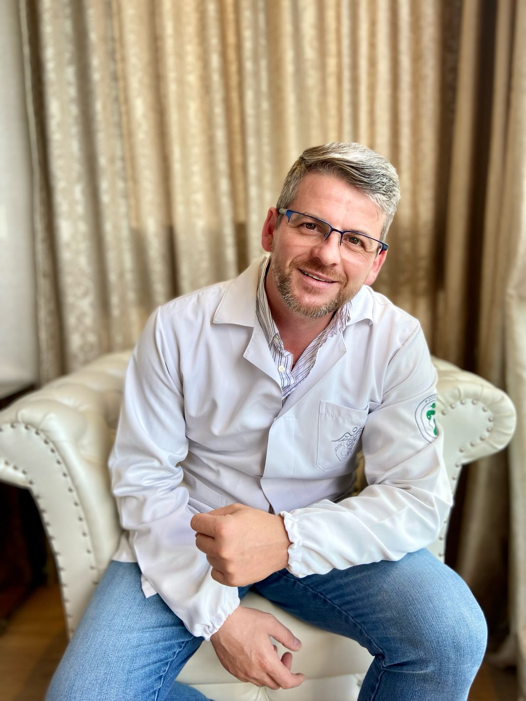
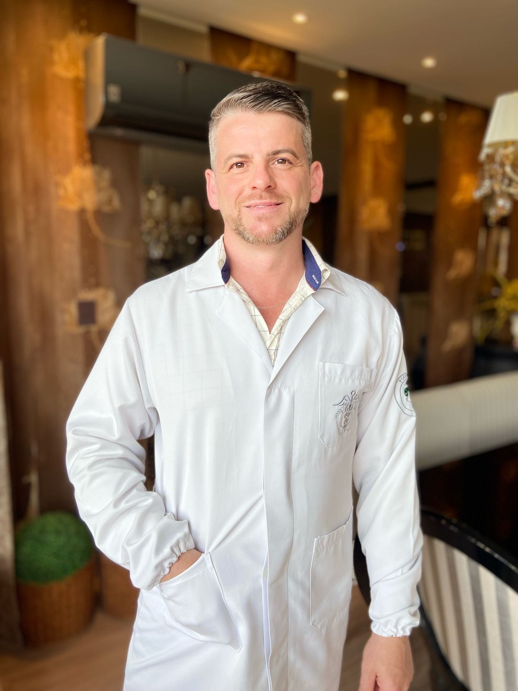
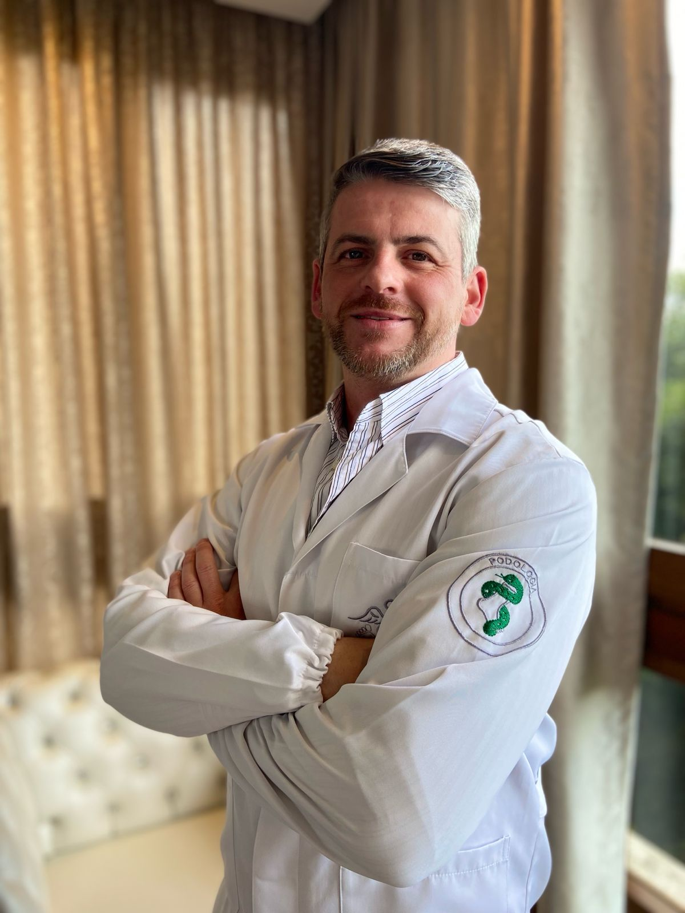

Gaúcho, formado pela Universidade de Caxias do Sul (UCS), Ricardo Wiltgen dedica sua trajetória profissional à podologia há mais de duas décadas.


Ao longo desses anos, construiu uma carreira baseada em aperfeiçoamento contínuo, experiência clínica e atendimento individualizado, tornando-se referência para pacientes que buscam um cuidado especializado, seguro e resolutivo.
Seu trabalho vai além da realização de procedimentos. Cada atendimento é conduzido com atenção aos detalhes, avaliação criteriosa e foco na identificação da causa dos problemas, oferecendo soluções personalizadas para preservar a saúde e a funcionalidade dos pés.
Uma abordagem especializada para avaliação, prevenção, correção e tratamento de alterações que afetam a saúde dos pés.
Diferente de um cuidado exclusivamente estético, a Podologia Avançada envolve conhecimento técnico aprofundado, análise clínica e utilização de técnicas específicas para tratar condições que exigem maior experiência profissional.
Muitos pacientes procuram atendimento após conviverem durante meses ou anos com desconfortos recorrentes, alterações ungueais ou situações que não obtiveram resolução satisfatória anteriormente. Nesses casos, um olhar especializado faz toda a diferença.
Os pés são a base do corpo e desempenham um papel fundamental na mobilidade, equilíbrio e qualidade de vida. Pequenas alterações podem gerar desconfortos progressivos, modificar a forma de caminhar e impactar a rotina diária.
Cada avaliação busca compreender: a origem da queixa, os fatores que contribuem para sua manutenção, possíveis alterações estruturais, riscos de recorrência e estratégias para prevenção e acompanhamento.

Tratamentos especializados para diferentes necessidades
Avaliação e tratamento especializado de quadros agudos e recorrentes.
Técnicas específicas para auxiliar na correção do crescimento inadequado das unhas.
Reconstrução estética e funcional em casos selecionados.
Acompanhamento preventivo e cuidados especializados para redução de riscos.
Avaliação e manejo de diferentes alterações que comprometem a saúde e a aparência das unhas.
Tratamento focado na redução de desconfortos e prevenção de complicações.
Situações que exigem avaliação aprofundada, experiência clínica e acompanhamento especializado.
A experiência permite identificar detalhes que muitas vezes passam despercebidos e definir condutas mais adequadas.
Cada paciente possui uma história, uma rotina e necessidades específicas.
A busca constante por atualização técnica faz parte da filosofia de trabalho do Ricardo.
Muitos pacientes procuram atendimento após tentativas anteriores sem resultado satisfatório.
Todos os procedimentos são realizados com rigor técnico e foco na saúde do paciente.
Premiações e reconhecimento da comunidade pela qualidade do trabalho e dedicação aos pacientes.
"Cuidar dos pés é cuidar da base do corpo."
Essa visão orienta cada atendimento realizado. Mais do que resolver um problema pontual, o objetivo é proporcionar conforto, mobilidade, segurança e qualidade de vida por meio de um cuidado especializado e responsável.
"Muitos pacientes chegam ao meu consultório frustrados, após passarem por diversos tratamentos sem sucesso. Meu compromisso é ir além do visual: eu investigo a fundo a raiz da sua dor física ou do problema crônico nas unhas e na pele. Utilizo técnicas avançadas para resolver de forma definitiva o que parecia impossível, devolvendo o seu conforto e o prazer de caminhar sem dor."
— Ricardo Wiltgen
Informações e orientações para cuidar da saúde dos seus pés
Carregando artigos...
Se você convive com desconfortos, alterações nas unhas, problemas recorrentes ou busca um atendimento especializado em Podologia Avançada, agende uma avaliação.
Cada caso merece atenção individual e uma abordagem adequada às suas necessidades.
Agendar avaliação pelo WhatsApp